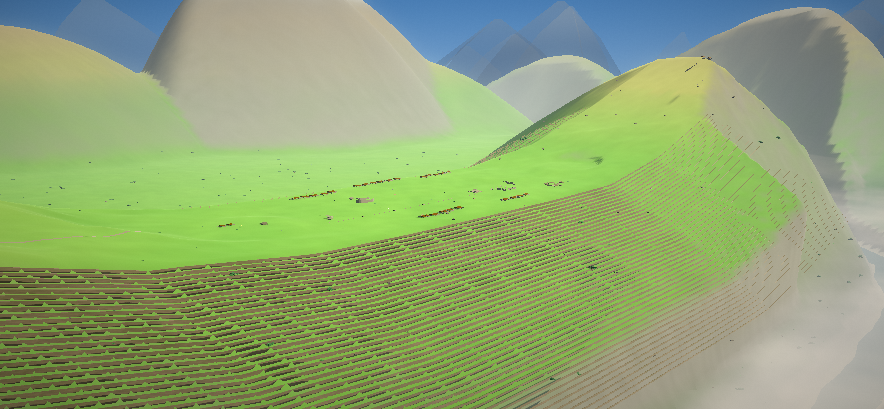

An open-world walk through the Inca citadel — terraced flanks, the Urubamba gorge, a sea of cloud at dawn, and a paraglider to get you down there. Built with procedural terrain and a toon-shaded renderer.
Four years at Handan Road, 48 months, five fields of study. Submit to Nature, Science, Cell or a CSSCI journal — and watch every single one come back accepted.